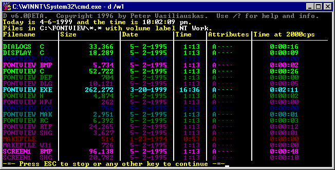

|

|
D
|
|
Download Now:
|
d60.zip
|
|
Version:
|
6.0Beta |
|
Released:
|
6/9/1997 |
|
Description:
|
The colored DOS directory listing guy. |
|
Supported Systems:
|
DOS |
|
Cost:
|
free |
|
Download Size:
|
30KB
(30,570 bytes)
|
|
Download Time:
|
6.1 seconds (at 5KB/s)
|
|
Number of Downloads:
|
4009 |
Description
D (as seen by the 6.0) has been around awhile. This is
the latest and greatest, though I don't seem to be doing DOS much
anymore.
Screen Shots

History
- 6/9/97 - Version 6.0Beta released, because it works well enough for
somebody to use.
- ~5/1/95 - Version 5.0 was released. Customizable colors, but a little
slow and limited.
- ~3/29/95 - Version 4.1 released. Fast, direct screen writes, and C
command line parameters.
- ~11/29/94 - Version 4.0. First version in solely C, a complete
rewrite of any previous versions, but used ANSI.SYS for output.
- ~2/6/94 - 3.1... in QBasic... wow.
- ~12/10/93 - Version 3.0, a very short-lived QB version.
- ~8/16/93 - Version 2.1, a few new colors and a speed fix on top of 2.
- ~8/11/93 - Version 2.0, speed increase, color modifications, and no
clue how to label version numbers.
- ~6/27/93 - Version 1.0, QBasic, used "dir > file.d" to get files,
worked extremely slow, but hey, I was programming.
Known Bugs
- Many options are not available in the Beta.
|